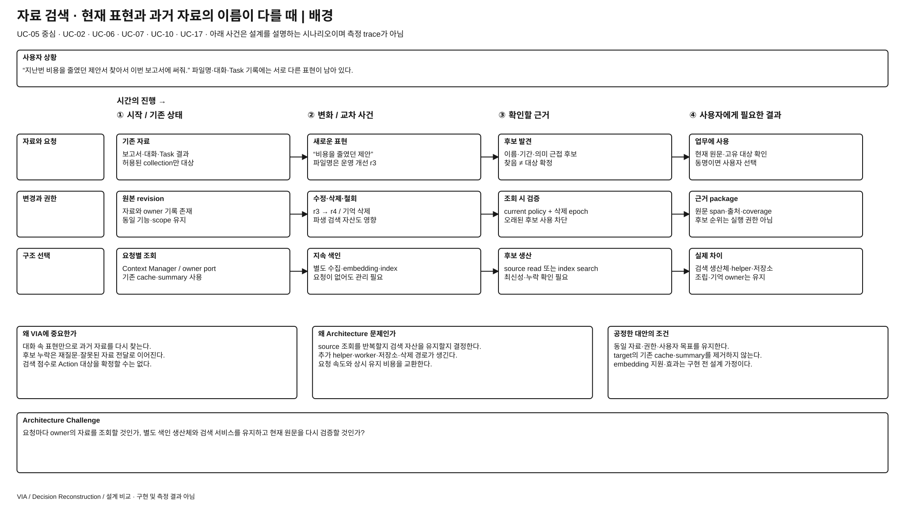
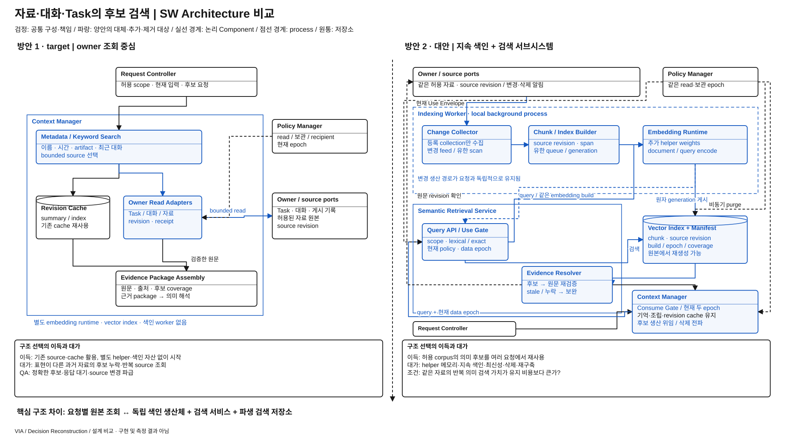
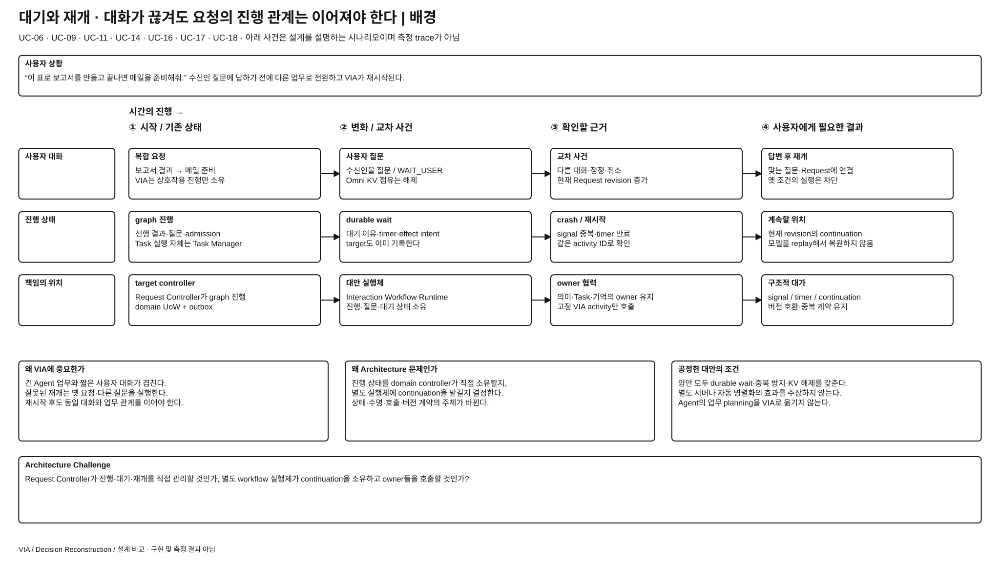
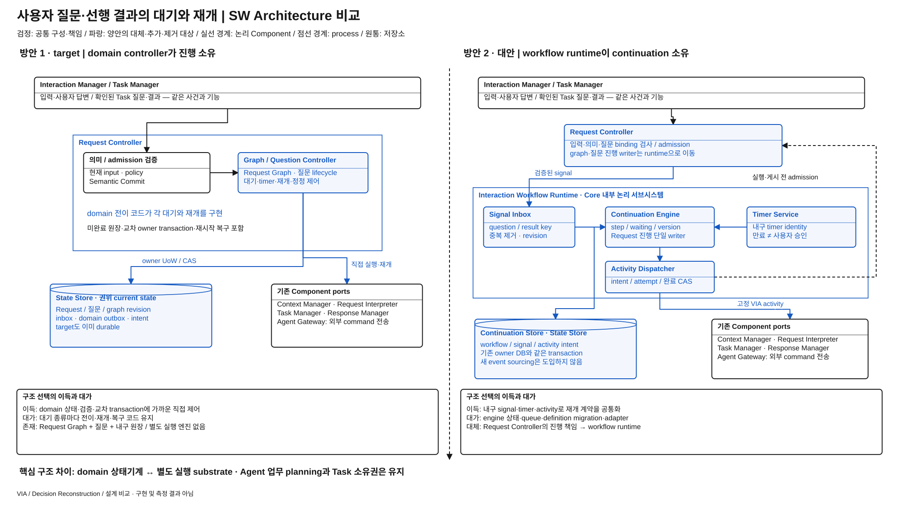

<!doctype html><html lang="ko"><meta charset="utf-8"><title>VIA 설계 비교 · 8페이지</title><style>body{margin:0;background:#ececec;font-family:Arial}nav{padding:18px;position:sticky;top:0;background:white;border-bottom:1px solid #aaa}section{max-width:1600px;margin:24px auto;background:white;break-after:page}img{display:block;width:100%;height:auto}p{padding:0 20px 16px}@media print{nav,p{display:none}section{margin:0;max-width:none}@page{size:16in 9in;margin:0}}</style><nav>VIA · 배경 / 설계 비교 8페이지 — 브라우저 확대 또는 SVG 원본으로 보기</nav><section><p><a href="semantic-retrieval-subsystem-background.drawio">draw.io 원본</a></p></section>
<section><p><a href="semantic-retrieval-subsystem-comparison.drawio">draw.io 원본</a></p></section>
<section><p><a href="durable-request-orchestration-background.drawio">draw.io 원본</a></p></section>
<section><p><a href="durable-request-orchestration-comparison.drawio">draw.io 원본</a></p></section>
<section><p><a href="speech-evidence-source-background.drawio">draw.io 원본</a></p></section>
<section><p><a href="speech-evidence-source-comparison.drawio">draw.io 원본</a></p></section>
<section><p><a href="recovery-state-source-background.drawio">draw.io 원본</a></p></section>
<section><p><a href="recovery-state-source-comparison.drawio">draw.io 원본</a></p></section></html>